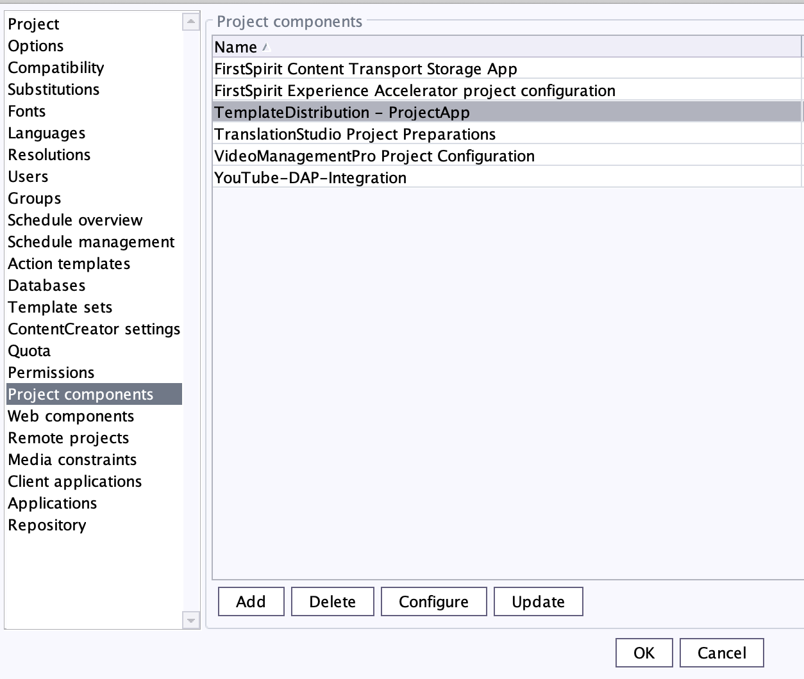

Development
Custom App Platform
This chapter is intended to enable you to deploy your own application using the FirstSpirit Custom App Platform. The following information is currently required to enable you to initiate the deployment of your own applications.
|
For further information please have a look at Custom App Platform. |
Template Distribution
The development of templates will take place in FirstSpirit SiteArchitect (Development Stage).
The feature Template Transport allows to transfer all templates (Page Templates, Section Templates, etc.) to all other projects on all other stages. To do this, the user must have an appropriate group assignment in the potential target projects.
This procedure can also be used for manually import of local templates onto the Development server.
Default behaviour
Each transport consists of following objects:
-
Whole template store
-
Technical Media Assets folder of Media Store
uid = technical_media_assets -
All Resolutions
-
DEV Master-Project is connected to the ones on the Stages QA and PROD
|
For individual setup, please contact our Technical Support or have a look at Configuration. |
How to use Template Distribution?
The Developer can start the Template Transport in FirstSpirit SiteArchitect via the button (see figure below) to select one or more target servers. Via the context menu you will get a list of possible target projects.
|
On localhost all projects will be listed; except the current master project. |
The target project needs to have a permission group Template Distribution and the currently logged in user needs to be a member of this group.
The transport will be managed by a FirstSpirit Service.
After the service is started you will receive a server message.
The SiteArchitect will freeze during transport.
Do not worry if your client or your network connection breaks during transport.
Once the transport is initiated it runs independently on the server.
After transport to all targets is finished you’ll receive an email from sender ecs@e-spirit.hosting with subject Template Transport finished.
Which Stage is allowed to deploy to other Stages can be configured via Template Distribution Project App under Target-Server.
The default behaviour ist menu:DEV[QA>PROD].
Templates are not treated as Artifacts and they are not under external version control. Therefore, it is not possible to downgrade to earlier versions of the Templates with this mechanism.
Configuration
To use the Toolbar in a project you’ll need to add a project app to the desired master project in the server manager.

- Username & Password
-
The username and password should be predefined in existing projects. If they are not predefined, please contact our Technical Support via email: help@e-spirit.com.
- Target-Server
-
A comma-separated list of target hosts for the Template-Distribution process. localhost is always a possible target, for Template-Distribution to another project on the same server.
The target projects need to have a Permission Group
Template Distributionas an external Group Stringcn=Template Distribution,ou=<customer>,ou=Groups,dc=ecs,dc=e-spirit,dc=de - Export parameters
-
Separated by blank, values separated by ":"
The export parameters that are passed to the fs-cli tool.-
root:templatestore - to transport all templates
-
mediafolder:technical - to transport technical media assets in folder with uid
technical -
content2:<content2uid>:<content2uid> - to transport technical datasets from one or more content2 sources
-
entities:<enitityuid> - to transport entity(ies)
-
projectproperty:RESOLUTIONS - to transport resolutions
-
Example Export Parameters (minimal):
root:templatestore projectproperty:RESOLUTIONS
Here is a full list of possible arguments:
-
fs-cli Export - Exports elements, entities, project properties.
Use one or more of the following identifiers to specify export objects. -
Export elements based on uid with identifiers like
pageref:pageRefUid
Known prefixes for uid-based export
content2 |
gcapage |
media |
page |
pagereffolder |
documentgroup |
pagetemplate |
schema |
sectiontemplate |
workflow |
mediafolder |
styletemplate |
pagefolder |
tableformattemplate |
pageref |
linktemplate |
script |
query |
formattemplate |
tabletemplate |
Export elements based on path path:/<STORE>/<UID>|<NAME>
Export entities with identifiers like entities <CONTENT2_UID>
Export project properties with identifiers like projectproperty:RESOLUTIONS
Known project properties
ALL |
COMMON |
RESOLUTIONS |
GROUPS |
TEMPLATE_SETS |
FONTS |
LANGUAGES |
USERS |
CUSTOM_PROPERTIES |
|
SCHEDULE_ENTRIES |
|
MODULE_CONFIGURATIONS |
Export store root nodes with properties with identifiers like templatestore or root:templatestore`
Known root node identifiers
globalstore |
sitestore |
pagestore |
templatestore |
contentstore |
|
mediastore |
| SYNOPSIS | |
|---|---|
fs-cli |
|
* HTTP |
|
|
|
|
|
|
|
|
|
|
|
|
|
|
|
|
|
|
|
|
|
|
|
export |
|
|
|
|
|
|
|
|
|
|
|
|
|
EXAMPLES |
|
|
|
|
|
|
|
|
|
|
|
|
|
|
|
|
|
|